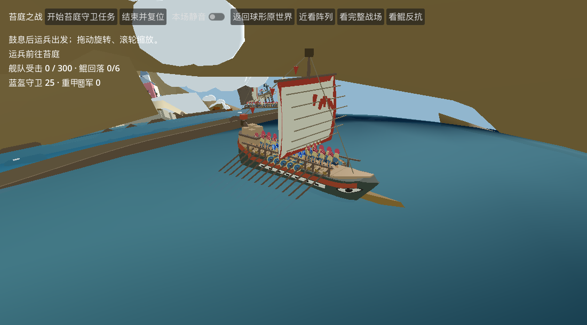

原作苔庭场景由正常开始战斗触发出船，运行 6.1 秒。实际船体已替换为 Blender v6：尖船头、船头眼睛、船尾货物、26 位原桨手、平放登船板。

301 帧 × 52 个握点：最大世界空间误差 0.00001541；登船板平放误差 0。去返程 12 个航向检查均与航路切线一致。重置清空实际船只和适配器记录。
边界：这是实际场景模型与划桨接入验证，不是完整战斗验收。截图仍有原 Godot 地形遮挡；25 位战士的新版甲板站位、登离船通路及整船避障未验收，未沿用旧 v1 通路的通过结论。